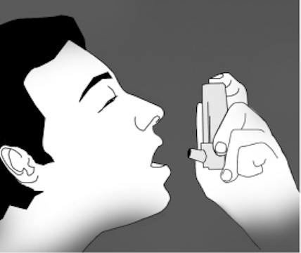
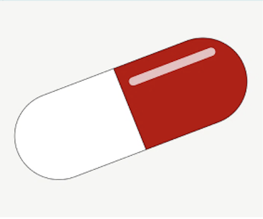

TREATMENTS
According to Mayo Clinic, managing asthma involves a combination of strategies aimed at controlling symptoms and preventing exacerbations. Treatment plans are usually personalized by health practitioners to individual needs, considering factors such as the severity of the condition, triggers, and the patient's overall health. Regular monitoring of lung performance, along with ongoing communication between patients and healthcare providers, is crucial for effective asthma management.
SHORT TERM
Short-term preventive medications for asthma play a crucial role in the quick relief of symptoms during an asthma attack.
These medications, known as quick-relief or rescue medications, include short-acting beta-agonists such as albuterol, distributed through inhalers or nebulizers, and anticholinergic agents like ipratropium and tiotropium that relax airways.
Additionally, oral and intravenous corticosteroids, like prednisone, provide quick relief by addressing severe episodes of inflammation.
For individuals whose asthma is triggered by allergies, allergy medications such as shots enable a more targeted solution.(Asthma)
(Center for Public Health and Safety, 2010)
LONG TERM
Long-term preventive medications for asthma are fundamental in managing the condition and minimizing the risk of attacks
Inhaled corticosteroids, including fluticasone and budesonide, form the cornerstone of daily treatment, effectively controlling airway inflammation and maintaining day-to-day asthma control.
For some individuals, theophylline, taken as a daily pill, provides additional relief by relaxing the muscles around the airways to keep them open, although it is less frequent and requires regular blood tests. The comprehensive use of these preventive measures highlights the importance of treatment plans' personalization to individual needs for effective control.(Asthma)
(Raw pixel, nd.)